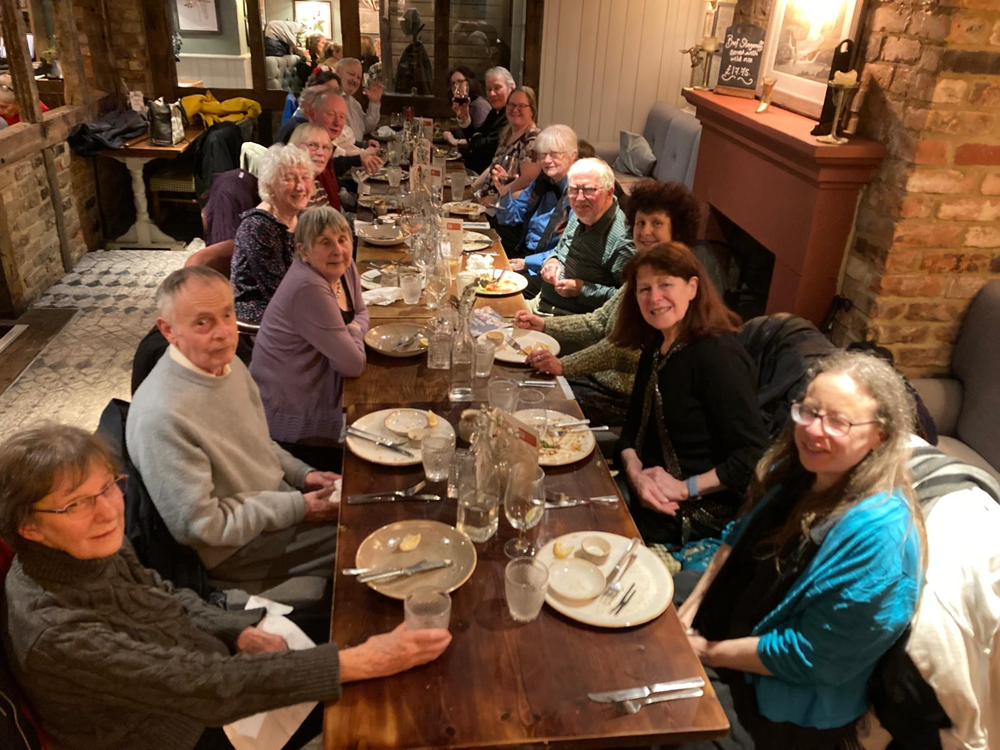

Posted on February 24th, 2026
It was the end of an era on 31st January 2026 when Whitethorn went to a new venue for their Xmas meal. For the last 14 years we have enjoyed the hospitality of Mary and Robert for a bring and share party at their house in Eastcote. Before anything could be arranged Bolton Wanderer’s fixture list was consulted and once a Saturday was found without any matches then the date was set. Furniture was rearranged to accommodate us all for a sit down meal. We took our own utensils and of course plenty of food which was unfailingly delicious. They created an ambience for us all to enjoy.
We were always greeted with mulled wine and other drinks, Jackie’s nibbles and a quiz, treasure hunt or dingbats done in groups of 2 or 3 as you arrived, the answers given out when everyone had finished. Then we sat down to eat, there was plenty of choice. Judith’s chicken curry was always popular as were the various vegetarian dishes. Puddings, Janet’s legendary panettone bread and butter pudding, Jacqueline’s key lime pie and Sue’s meringue. Recently Christine and Peter’s pass the parcel was introduced with Peter (accordion) or Sue (melodeon) playing. There was either a chocolate treat or forfeit in each layer.
Then Peter would play some tunes, Blueberry Hill, Mary’s favourite, Ob-la-di, Ob-la-da and others on the piano. After the dirty dishes had been washed up and pots of tea and coffee drunk the musicians retired to the front room to play some tunes. Someone grabbed kindling sticks from the fireplace to provide sticks for the dancers. Six dancers at a time took to the limited floor space in stockinged feet and danced with exuberance mindful to keep elbows tucked in and kicks restrained. After every such evening our thanks to Mary and Robert for their warm hospitality and hard work was truly heartfelt as we ventured out into the cold air knowing that we had experienced yet another wonderful and magical Whitethorn Christmas party.
Happy memories recalled from chatting to current members of Whitethorn.
Sylvia Simmonds
Secretary, Whitethorn Morris
